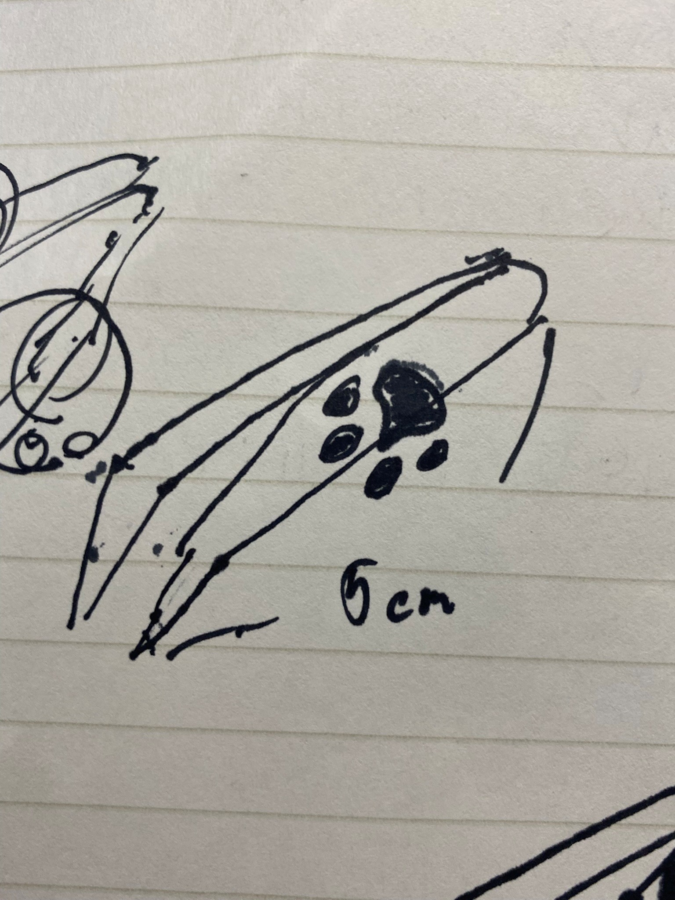
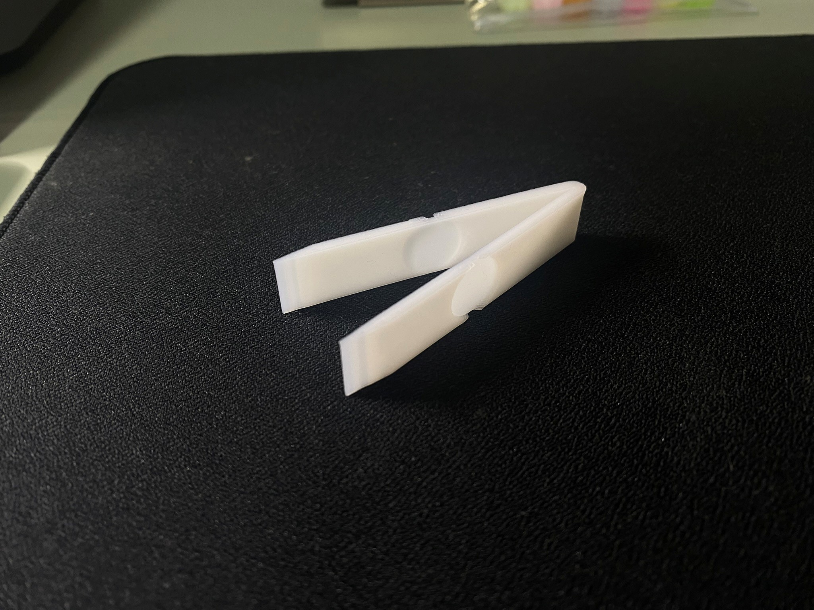
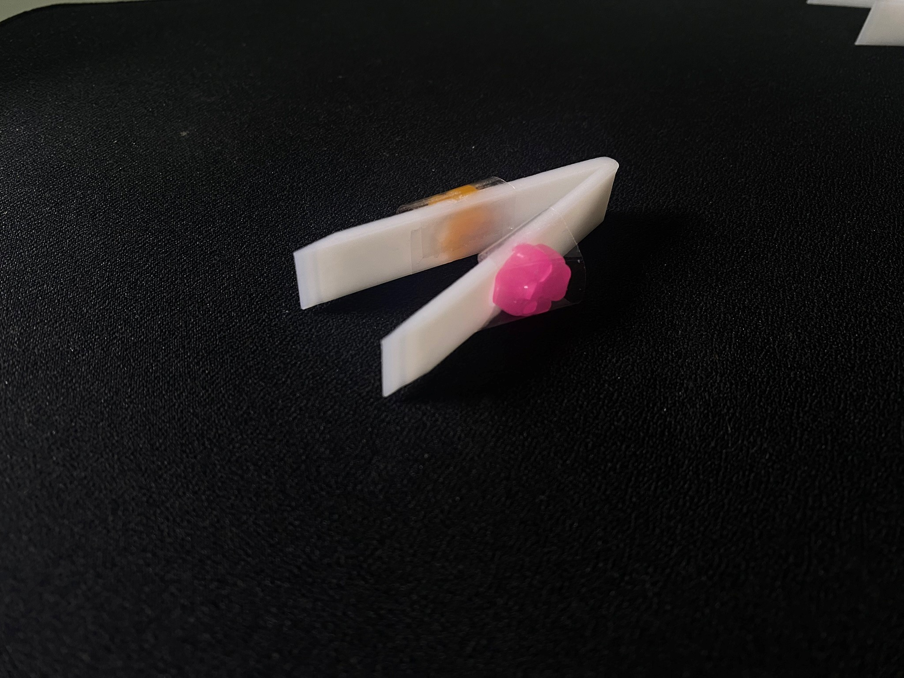
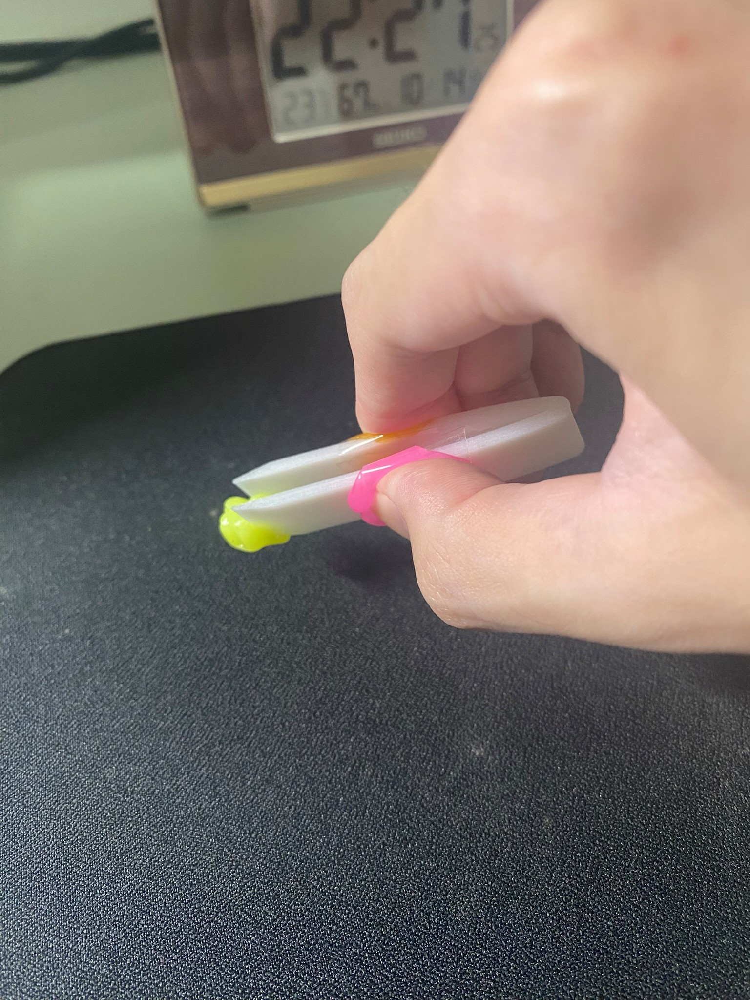

制作意図
ピンセットは繊細な作業を必要とするのに、持ち手の部分が固く、長時間の使用に向いていないのでは。⇒持ち手に肉球があれば使い心地がいいのでは？
構想段階のスケッチ

（長さ：5㎝ 厚み：2㎜）
完成品
特徴として、スクイーズの肉球を付けるために深さ1mmの窪みを作ってある。
肉球を付けてみる

実際に使ってみた感想
- 感触はいい感じ。
- スクイーズが厚すぎるのと、窪みが浅すぎてスクイーズが指からはみ出る。
- 肉球をもう少し先に寄せた方が扱いやすいか。
反省点とまとめ
- セロハンテープ以外で肉球が取り付けられたら良かった。
- スクイーズが自作できればもっとよかった。（自作キットは値段が高く、手間もかかるため断念）
- 3Dprintingはデザインするのは簡単だが、それが実際にうまく使えるかは作ってみるまで分からない。
⇒慣れるまで何度も作ってみるべき。